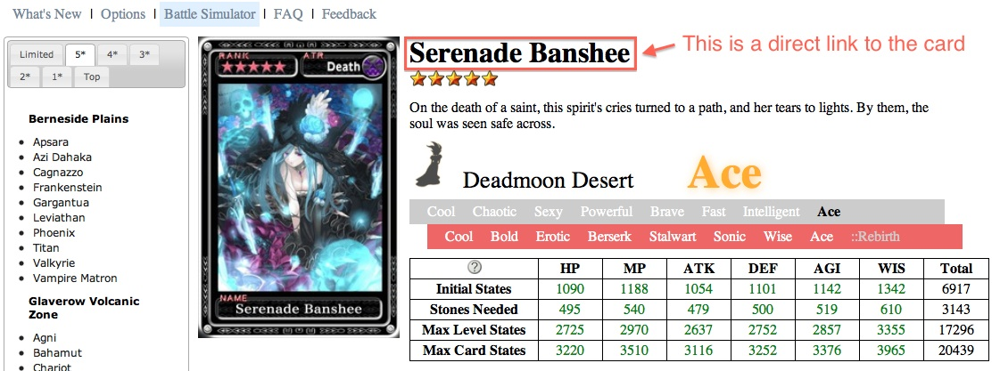
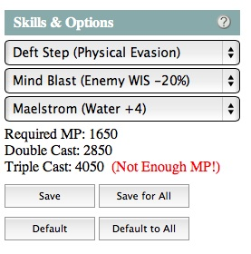

I cannot see any card. What should I do?
First, please make sure that
- you didn't disable the loading of all cards,
- your browser is up to date,
- your browser support HTML5 and Javascript, and
- your browser is not Internet Explorer (not required).
Internet Explorer is not recommended because the original developer of this site used Mac.
Sometimes I may use features that are not supported by Internet Explorer.
If some of the cards are enabled but you cannot see them.
That may be caused by a Javascript error.
A possible reason is that when Javascript files are updated on the server,
the browser (or the network provider) may not fetch all the updated files.
For this case, please perform the following step.
Sometimes a single refresh may not work.
So if the problem still exists, please perform the following steps.
- Clear the browser cache.
- Refresh the webpage.
Note that some network providers may cache webpages.
Even you refresh the site many times, the network providers
may still return the cached and obsolete webpages.
Why there is [CARD NOT LOADED]?
That should be a link to a card, which has been disabled by you.
How to get a direct link to a card?
When you select a card, click on the big name of the card and then
the current URL will change. The new URL with "id=xxxxx" is a direct
link to the card.

How to search for a card?
You may search for a card with a specified name by the URL of the
following form:
http://gccards.web.fc2.com/?name=TERM
where TERM is a string of comma separated terms. The first matched
card will be returned. For example,
http://gccards.web.fc2.com/?name=gilga
gives you Gilgamesh, and
http://gccards.web.fc2.com/?name=gilga,ffv
gives you Gilgamesh (FFV).
You may also search for a card with a specified ID by the URL of the
following form:
http://gccards.web.fc2.com/?id=ID
where ID is the ID of the card (5 digits). For example,
http://gccards.web.fc2.com/?id=40054
gives you Serenade Banshee.
If you want to search for several cards that satisfy a certain condition, you may use
the URL of the following form:
http://gccards.web.fc2.com/cards.html?QUERYS
where QUERYS is a string of & separated QUERY, QUERY has the form Q=T, and T is a
string of comma separated search terms. Q may be one of the following:
- id: Search for cards with the IDs.
- name: Search for cards with names containing all the search terms.
- stars: Search for cards with one of the specified stars.
- attr: Search for cards with one of the specified attributes.
- place: Search for cards encountered in one of the specified places.
- border: Search for cards with one of the specified borders (almighty, mighty, great, or none).
- skill: Search for cards with one of the specified skills. (Shorthands such as ls, qs, sd, and ds can be used.)
For example,
http://gccards.web.fc2.com/cards.html?place=plains&stars=4,5&border=none
returns non-bordered 4 stars and 5 stars cards that are encountered in Berneside Plains.
What does the color of the big type mean?
The colors denote the classification of the types into good,
decent, and bad types with respect to the selected card.
Which classification is used can be set in the Options dialog.
We do not suggest that which classification
should be used.
Set the classification with your own judgement and preference.
Below are the colors (from good to bad).
- Ace type
- Ace
- Good types
-
Good
Good
Good
Good
- Decent types
-
Decent
Decent
Decent
Decent
- Bad types
-
Bad
Bad
Bad
Why my max card stats are different from yours?
The max card stats are computed from the initial values.
Bias may exist.
Why RB Ace Nuada cannot kill (one shot) RB Ace Omega
but RB Ace Omega can be killed by (one shot by) RB Ace
Nuada with Physical+4?
The default skills set of
RB Ace Nuada
contains Last Stand, Greater Might (ATK+20%), and Storm Impact (Physical+4).
With the three skills,
RB Ace Nuada
cannot kill RB Ace Omega
equipped with Weakness (Enemy ATK-20%), which is not a recommended skill of
RB Ace Omega.
The default skills set of
RB Ace Omega
contains Mind Blast (Enemy WIS-20%), Vanish (Light+4), and Greater Cunning
(WIS+20%). With the three skills,
RB Ace Omega
may be killed by
RB Ace Nuada
equipped with Greater Might (ATK+20%), Storm Impact (Physical+4), and Ursince
Aspect (ATK/DEF+10%).
If the option "Ignore Non-Recommended Buff/Debuff" is enabled, then we only
consider the case where both
RB Ace Nuada
and
RB Ace Omega
use their default skills, and thus the results will become consistent.
Are the recommended skills always the best?
No.
The best skills depend on the type and the usage of the cards.
For example, Sphinx Empress as a physical attacker may be equipped
with QS, ATK+20%, and Physical+4 while Sphinx Empress as an
elemental attacker may be equipped with QS, WIS-20%, and
Elemental+4.
You may set your own recommended skills by the buttons in Skills&Options.
- Save - Save the recommended skills for the card of the selected type.
- Save for All - Save the recommended skills for the card of all types.
- Default - Revert the recommended skills for the card of the selected type.
- Default to All - Revert the recommended skills for the card of all types.
The data will be saved in a local storage, which can be cleared in Options.

Where can I find Aura cards?
They are in
ExCards.
- They are originally called EX cards in the Japanese version.
- "EX" is shorter than "Aura".